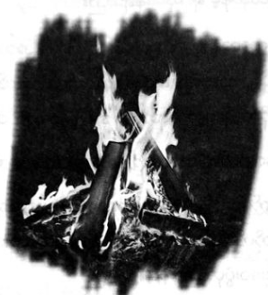

သတ္တုဝတ်ရုံအား သင်္ဂြိုလ်ရခြင်း
အိပ်မက်ထဲတွင် ရေချယ်လ် အဲလိဇဘက်ဒါရီမှာ ပါစီ့ပုံကို လက်ပစ်မြား လေးများနှင့် ပစ်နေ၏။ သူမအခန်း ထဲတွင် ဖြစ်သည်။ အခန်းဟု ဆိုရသော်လည်း ရေချယ်လ်မှာ မိသားစုနေသော စံအိမ်ကြီး၏ အပေါ်ဆုံးထပ် တစ်ထပ် လုံးအား အခန်းလုပ်ထားခြင်း ဖြစ်သည်။ ပါစီ နေသော တိုက်ခန်းတစ်ခန်းလုံး ထက်ပင် အခန်း က နှစ်ဆခန့် ပိုကျယ်၏။
သီချင်းကို ကျယ်ကျယ်လောင်လောင် ဖွင့်ထားသည်။
ကီမိုနိုဝတ်စုံနှင့်ဖြစ်ပြီး ယခုမှ အိပ်ရာမှ ထလာသူနှယ် ဆံပင်များက ပွရှုပ်နေ၏။ အိပ်ရာမှာလည်း ရှုပ်ပွနေပြီး ကြမ်းပြင်ပေါ်တွင် အဝတ်ဟောင်းများ၊ မုန့်ထုပ်ခွံများ ပွထနေသည်။ သို့သော် အခန်းမှာ ကျယ်လွန်းသဖြင့် ပွရှုပ် နေသည် ဟု ပြော မရ။
မြားနှင့်ပစ်နေသောပုံမှာ အန်တေးယပ်စ်ပေါ်တွင် ပါစီ ရပ်နေသော ပန်းချီပုံ ဖြစ်ပြီး ထိုပုံကို လွန်ခဲ့သော လ အနည်းငယ်က ရေချယ်လ် ရေးဆွဲခဲ့ခြင်း ဖြစ်သည်။ ထိုပုံထဲရှိ ပါစီ့မျက်နှာမှာ တင်းမာလွန်းနေပြီး ရေချယ်လ်ကမူ သူ့ အမူအရာမှာ တိုက်ပွဲပြီးချိန်တွင် ထိုအတိုင်းပင် ဖြစ်သည်ဟု ဆို၏။
“နတ်သွေးနှောတဲ့သူ … စိတ်ပျက်စရာကောင်းတဲ့ တာဝန်တွေ”
တတွတ်တွတ် ရေရွတ်ရင်း မြားနှင့် ပစ်နေ၏။ အများစုမှာ မစိုက်ဘဲ ခုန်ထွက်သွားကြ သော်လည်း စိုက်နေသော မြားအချို့ထဲတွင် မြားတစ်ချောင်းမှာ ပါစီ့ မေးစေ့၌ မုတ်ဆိတ်ကဲ့သို့ တွဲလဲခိုနေ၏။ အိပ်ခန်းတံခါးကို တဒုန်းဒုန်းထုသံ ကြား လိုက်ရသည်။
“ရေချယ်လ် … ဘာလုပ်နေတာလဲ … ဆူညံနေတာပဲ”
ရီမုဒ်ဖြင့် သီချင်းပိတ်ရင်း ရေချယ်လ် ပြန်ပြောလိုက်သည်။
“ဝင်ခဲ့လေ …”
ရေချယ်လ့်အဖေမှာ မျက်မှောင်ကုတ်နေပြီး အပြာရောင် ညဝတ်အင်္ကျီကို ဝတ်ထားသည်။ ဆံပင်မှာ ရေချယ်လ့်ထက် အနည်းငယ် ပိုအရောင်ရင့်ကာ တစ်ခြမ်းလုံး ပြားကပ်နေပြီး ခေါင်းအုံးနှင့် တိုက်ပွဲတွင် ရှုံးလာပုံရ၏။
“ဘယ်လိုဖြစ်တာလဲ … မနက်သုံးနာရီကြီး”
“အိပ်မပျော်ဘူး …”
မြားများကို ရေချယ်လ် ဝှက်ထားသော်လည်း မစ္စတာဒါရီ မြင်သွား၏။
“သမီးသူငယ်ချင်း စိန့်သောမတ်စ်ကို မလိုက်နိုင်ဘူးပေါ့ ….”
မစ္စတာဒါရီမှာ ပါစီ့ကို သမီးသူငယ်ချင်း ဟုသာ ဝိသေသ ပြုလေ့ရှိပြီး မျက်နှာချင်းဆိုင် ပြောခဲ့လျှင်လည်း “ကောင်လေး” ဟုသာ ခေါ်တတ်ကာ “ပါစီ” ဟု ခေါ်လေ့ မရှိ။
ရေချယ်လ် မျက်မှောင်ကုတ်သွားရင်း ….
“မပြောတတ်ဘူး”
“မနက် သွားတော့မှာလေ … ခုထိ မဆုံးဖြတ်ရသေးဘူး ဆိုရင် ….”
“မလာလောက်တော့ပါဘူး … ကျေနပ်ပြီလား”
မစ္စတာဒါရီ လက်နောက်ပစ်ကာ မတ်မတ်ရပ်နေပြီး မျက်နှာက ခပ်တင်းတင်းပင် ဖြစ်သည်။ ကုမ္ပဏီဝန်ထမ်းများ စိတ်ပူချင်စရာ မျက်နှာအမူအရာမျိုးပင်။
“အိပ်မက်ဆိုးတွေ မက်တုန်းပဲလား … ခေါင်းရော ကိုက်သလား …”
“အဖေ့ကို မပြောသင့်ဘူး …”
“အဖေက သမီးရဲ့ အဖေလေ … စိတ်မပူရဘူးလား”
“မိသားစု နာမည် ပျက်မှာကို စိတ်ပူတာ မဟုတ်လား”
မစ္စတာ ဒါရီ ဘာမှပြန်မပြော။ ထိုစကား မှန်နေ၍ပဲလား။ ရေချယ်လ် ပြောနေကျမို့လား မသိနိုင်။
“ဒေါက်တာ အာ့စ်ရိုက်နဲ့ ပြရအောင်လေ … သမီးရဲ့ ပူးလေးသေလို့ စိတ်ဓာတ်ကျတာကို သူပဲ ကုပေးခဲ့တာပဲ”
“အဲဒီတုန်းက ခြောက်နှစ်သမီးလေ … နေပါစေ … မလိုပါဘူး ……”
ရေချယ်လ် ခေါင်းကိုသာ တွင်တွင်ခါနေ၏။
“အဝေးမှာနေတာ အကောင်းဆုံးပဲ… ဒီက သူငယ်ချင်းတွေနဲ့ ဆက်မနေသင့်တော့ဘူး …”
“ကလာရွန် အမျိုးသမီး အကယ်ဒမီကို မသွားနိုင်ဘူး အဖေ … သမီး သူငယ်ချင်း ဘယ်သူဖြစ်ဖြစ် အဖေ့ကိစ္စ မဟုတ်ဘူး …”
မစ္စတာ ဒါရီ ပြုံးနေသော်လည်း ကြင်နာစွာ ပြုံးနေခြင်း မဟုတ်။ တစ်နေ့နေ့ တော့ ရေချယ်လ် သူ့အမှားသူ သိလာမည်ဟု တွေးရင်ပြုံးနေခြင်း ဖြစ်သည်။
“အိပ်ဖို့ ကြိုးစား … မနက်ဖြန်ညဆို ကမ်းခြေ ရောက်နေပြီ … ပျော်စရာ ကောင်းမှာပါ ..”
“အင်း … ပျော်စရာ ကောင်းမယ် ထင်ရတာပဲ”
အဖေ ဖြစ်သူ ပြန်ထွက်သွားလျှင် ရေချယ်လ်မှာ ပါစီ့ ပန်းချီပုံကို ငေးကြည့်နေသည်။
ထို့နောက် ပန်းချီရေးသည့် ဒေါက်နား လျှောက်သွားရင်း ...
“အိပ်မက်ပဲ ဖြစ်ပါစေလို့ မျှော်လင့်ရမှာပဲ” ဟု ရေရွတ်ကာ ဖုံးထားသော စာရွက်အား ဆွဲဖယ်လိုက်သည်။
စာရွက်ပေါ်တွင် ရေးထားသော ပုံများမှာ ခပ်သော့သော့ ရေးခြစ်ထားသော ခဲပန်းချီပုံများသာ ဖြစ်သော်လည်း ရေချယ်လ်မှာ ပန်းချီလက်ရာ ကောင်းသူ တစ်ယောက် ဖြစ်သည်။ ထိုပုံမှာ လုပ်ခ် ငယ်ငယ်က ပုံဖြစ်ပြီး အသက် ကိုးနှစ် ခန့်သာ ရှိသေးကာ ပြုံးနေပြီး မျက်နှာတွင် မည်သည့်အမာရွတ်မှမရှိ။ လုပ်ခ် ငယ်ငယ်ကပုံကို ရေချယ်လ် မည်သို့ သိကြောင်း ပါစီ တွေးမရသော်လည်း ပုံမှာ အလွန်တူသဖြင့် စိတ်မှန်းသက်သက်ဖြင့် ဆွဲထားခြင်း မဖြစ်နိုင်။ ပါစီ သိသလောက် ဆိုလျှင် ထိုကာလ၌ လုပ်ခ်မှာ သူ့ကိုယ်သူ နတ်သွေးနှောသူဟု မသိသေးဘဲ အိမ်တွင် နေစဉ်ကာလ သာ ဖြစ်သည်။
နောက်ထပ်ပုံတစ်ပုံကို ရေချယ်လ် လှန်ကြည့်လိုက်ပြီး ထိုပုံမှာ ပို၍ပင် ထူးခြားနေ၏။ အင်ပါယာစတိတ် အဆောက်အအုံ၏ ပုံဖြစ်ပြီး ပတ်ဝန်းကျင်၌ လျှပ်စီးများဖြင့် ပြည့်နေသည်။ အဝေးတွင် မုန်တိုင်းကြီးကို မြင်နိုင်ပြီး တိမ်ထဲမှ ဧရာမ လက်ကြီးတစ်ဖက် ထွက်နေသည်။
အဆောက်အအုံအောက်တွင် လူတစ်စုကို မြင်ရပြီး ပုံမှန်လမ်းသွားလမ်းလာများ မဟုတ်ကြဘဲ လှံများ၊ ဓားများ ကို ကိုင်စွဲထားကြကာ စစ်အလံများ ကိုင်ဆောင်ထား၏။
“ဘာတွေ ဖြစ်ကုန်ပြီလဲ ပါစီ .."
သူ ရှိနေသည်ကို သိသည့်နှယ် ရေချယ်လ် ရေရွတ်နေ၏။ ထိုမေးခွန်းကို အလွန်ဖြေချင်သော်လည်း အိပ်မက်မှာ ပျောက်ကွယ်သွားပြီ ဖြစ်သည်။
နောက်တစ်နေ့ မနက်တွင် ပါစီ ဖုန်းဆက်ချင်သော်လည်း သင်တန်းတွင် မည်သည့် ဖုန်းမျှမရှိ။ ဒိုင်အိုနစ်ဆပ်စ်နှင့် ခိုင်ရွန်မှာ ဖုန်းလိုအပ်သူများ မဟုတ်ကြ။ အိုလံပတ်စ်နှင့် ဆက်သွယ်လိုလျှင် အိုင်းရစ်နတ်သမီးကိုသာ သတင်းပို့ရန် သုံးကြ၏။ နတ်သွေးနှောသူ တစ်ယောက် လက်ကိုင်ဖုန်း ပြောမိပါက မိုင်တစ်ရာပတ်လည်ရှိ မိစ္ဆာအားလုံးကို အချက် ပေးသည့်နှယ် ရှိ၏။ သင်တန်းထဲ၌ အန္တရာယ်ကင်းသည်ဟု ဆိုသော်လည်း ဤနေရာတွင် ရှိပါသည်ဟု အမြဲ မကြေညာ သင့်။
ပြောရလျှင် နတ်သွေးနှောသူ အများစုမှာ (အန်နာဘတ်နှင့် အချို့မှ လွဲ၍) လက်ကိုင်ဖုန်း မရှိကြ။ “ငါ့ကို ဖုန်း ခဏငှား … ရေချယ့်လ်ဆီ ဖုန်းဆက်ချင်လို့” ဟူ၍ အန်နာဘတ်ဆီ ဖုန်းသွားငှားရန်လည်း မဖြစ်နိုင်။ ဖုန်းခေါ်ရန် သင်တန်း မှ ထွက်ပြီး အနီးဆုံး စတိုးဆိုင်ဆီ ရောက်ရန် မိုင်အတော်များများ လမ်းလျှောက် သွားရလိမ့်မည်။ သင်တန်းပြင်ထွက်ရန် ခိုင်ရွန် ခွင့်ပြုခဲ့လျှင်တောင် စတိုးဆိုင်ဆီ ရောက်ချိန်တွင် ရေချယ်လ်မှာ စိန့်သောမတ်စ် သွားရန် လေယာဉ်ပေါ်ရောက်နှင့် ပေလိမ့်မည်။
ပိုဆိုက်ဒွန် အဆောင်အတွက် စားပွဲတွင် မနက်စာစားရင်း ပါစီ တစ်ယောက်တည်း စိတ်ပျက်နေမိသည်။ ကျောက်သား ကြမ်းပြင်မှ အက်ကွဲရာကြီးကို ကြည့်ရင်း လွန်ခဲ့သော နှစ်နှစ်က အရိုးစုစစ်သည်များကို ငရဲပြည်သို့ နီကို ပြန်ပို့ခဲ့ပုံအား သတိရမိသည်။ ထိုအတွေးက အစားအသောက် ပို၍ ပျက်စေ၏။
မနက်စာ စားပြီးချိန်တွင် ပါစီနှင့် အန်နာဘတ်တို့ အဆောင်များကို စစ်ဆေးရန် ထွက်လာခဲ့သည်။ ပြောရလျှင် အဆောင် စစ်ဆေးရန် တာဝန်ကျသူမှာ အန်နာဘတ်ဖြစ်ပြီး ပါစီမှာ ခိုင်ရွန်၏ စစ်ပွဲသတင်းစာရွက်များကို စီစဉ်ပေးရမည် ဖြစ်သည်။ နှစ်ယောက်စလုံး စိတ်မပါသော အလုပ်များဖြစ်ရာ အနည်းငယ် အပျင်းပြေစေရန် နှစ်ယောက်ပေါင်း၍ အလုပ် လုပ်ရန် ဆုံးဖြတ်ခဲ့ခြင်း ဖြစ်သည်။
ပိုဆိုက်ဒွန်အဆောင်မှ စတင်ခဲ့ပြီး ပါစီ တစ်ယောက်တည်းနေသော အဆောင် ဖြစ်၏။ မနက်က အိပ်ရာကို ကမန်း ကတန်း ခင်းခဲ့ပြီး နံရံတွင်ချိတ်ထားသော မိုင်နိုတော ဦးချိုကို သေချာ ပြင်ဆင်ခဲ့သဖြင့် ကိုယ့်အဆောင်ကိုယ် ငါးမှတ်တွင် လေးမှတ် ပေးပစ်လိုက်သည်။
အန်နာဘတ် မျက်နှာ မဲ့သွားပြီး …
“နင် တော်တော် အမှတ်ပေးတာ ရက်ရောတာပဲ” ဟုဆိုရင်း ကြမ်းပြင်ပေါ်မှ ခြေအိတ်အဟောင်းကို ခဲတံဖြင့် ထိုးကော်ပြ၏။
ခြေအိတ်ကို ပါစီ ဆွဲယူရင်း …
“နင်ကလည်း … ဒီနှစ် နွေရာသီ အခန်းရှင်းဖို့ တိုင်ဆန် မရှိဘူး”
“သုံးမှတ်ပဲ ပေးနိုင်မယ် ..”
အန်နာဘတ်နှင့် ငြင်းခုံနေ၍ မထူးခြားသဖြင့် ရှေ့ဆက်လာခဲ့ကြသည်။ ခိုင်ရွန့်ထံ ပေးရမည့် သတင်းများကို ဖတ်လာခဲ့ရာ တစ်ကမ္ဘာလုံးရှိ ဆေတာများမှ ပေးပို့သော မိစ္ဆာများ၏ နောက်ဆုံး အခြေအနေသတင်းများ ဖြစ်ကြ၏။ အားလုံးမှာ စိတ်ပျက်စရာ ကောင်းသော သတင်းများ ဖြစ်ကြပြီး စာဖတ်ခက်သော ရောဂါရှိသည့် ပါစီ့ ဦးနှောက်အတွက် ပို၍ ဆိုးနေ၏။
နေရာအနှံ့တွင် တိုက်ပွဲကလေးများ ဖြစ်နေပြီး သင်တန်းသို့ သင်တန်းသား အသစ်တစ်ယောက်မှ မခေါ်နိုင်ကြ။ နိုင်ငံတစ်ခုလုံး မိစ္ဆာများနှင့် ပြည့်နေသဖြင့် ဆေတာများမှာ နတ်သွေးနှောသော ကလေးများကို အသစ်ရှာဖွေ တွေ့နိုင်ရန် အလွန် ခက်ခဲနေ၏။ အာတီးမစ်၏ အမဲလိုက်အဖွဲ့ သတင်းကို လုံးဝမကြားရပဲ ရှိသည်မှာ လအတော် ကြာကြာကပင် ဖြစ်ပြီး အာတီးမစ်ကလည်း သတင်းမှန်ကို ထုတ်မပြောချေ။
အဖရိုဒိုက်အဆောင်မှာ ငါးမှတ်အပြည့်ရပြီး ရေမွှေးနံ့ ပြင်းလွန်းသဖြင့် ပါစီ အမှတ်တစ်မှတ် နှုတ်ချင်သော်လည်း အန်နာဘတ်က သူ့ကို ဂရုမစိုက်ချေ။ ထို့နောက်တွင် အေးရီးစ်နှင့် အပိုလို အဆောင်သားများ၏ ရန်ပွဲ မြင်ကြရ၏။ အပိုလို အဆောင်သားအချို့က မြင်းပျံနှစ်ကောင် က သည့် မြင်းရထားဖြင့် ပျံသန်းရင်း မီးဗုံးပျံများဖြင့် ပစ်ရန် ကြိုးစားနေ၏။ ထိုမြင်းရထားကို ယခင်က ပါစီ မမြင်ဖူး။ အေးရီးစ်အဆောင်၏ ခေါင်းမိုးကို မီးစွဲလောင်နေသဖြင့် ရေကန်ထဲမှ ရေ နတ်သမီးများ အပြေးတက်လာကာ ရေဖြင့် လောင်းနေကြ၏။
ထို့နောက် အေးရီးစ်အဆောင်သားများ ကျိန်စာတိုက်လိုက်သဖြင့် အပိုလို အဆောင်သားများ၏ မြားအားလုံး ရာဘာ ဖြစ်ကုန်ကြ၏။ အေးရီးစ် အဆောင်သားများမှာ မြားထိသော်လည်း ဘာမှမဖြစ်ဘဲ မြားများသာ ခုန်ထွက်သွား ကြသည်။
အပိုလို လေးသည်တော် နှစ်ယောက်၏ နောက်မှ ဒေါသ အလွန်ထွက်နေဟန် ရှိသော အေးရီးစ် အဆောင်သား တစ်ယောက်က လိုက်နေပြီး ပါးစပ်မှ ကဗျာ ကာရန်နှင့် ဆဲဆိုကြိမ်းမောင်းနေသည်။
“ငါ့ကို ကျိန်စာတိုက်သတဲ့လား … သေဖို့သာ ပြင်ထားကြဗျား … ကဗျာ ရွတ်ချင်တယ် လို့များ မှတ်ကြသလား”
အန်နာဘတ် သက်ပြင်းချလိုက်သည်။
“လုပ်ကြပြန်ပြီ … အပိုလို အဆောင်သားတွေ ဟိုတစ်ခါ ကျိန်စာတိုက်တော့ ကဗျာသံ၊ စာသံတွေ ပျောက်ဖို့ တစ်ပတ်လောက်ကို ကြာသွားတယ်”
ပါစီ ကျောချမ်းလာ၏။ အပိုလိုမှာ ကဗျာနှင့် လေးသည်တော် နတ်ဘုရား ဖြစ်ပြီး အပိုလို ကဗျာစပ်သည်ကို ပါစီ ကြားဖူး၏။ လေးနှင့် အပစ်ခံရသည်ကမှ သူ့ကဗျာကို နားထောင်ရသည်ထက် သာလိမ့်မည်ဟု ပါစီ ထင်သည်။
“ဘာကိစ္စ ရန်ဖြစ်နေကြတာလဲ …”
ပါစီ့အမေးကို အန်နာဘတ် ဂရုမစိုက်ဘဲ အဆောင်နှစ်ခုစလုံးအား အမှတ် တစ်မှတ်စီ ပေးနေ၏။ ဘာမှန်းမသိဘဲ အန်နာဘတ်ကို ပါစီ ငေးကြည့်နေမိသည်။ ပြောရလျှင် အူကြောင်ကြောင်နိုင်သော ကိစ္စဖြစ်ပြီး အန်နာဘတ်ကို တွေ့ဖူး သည်မှာ အကြိမ်တစ်သန်းပင် မကလောက်တော့။ ယခု နွေရာသီတွင်မှ အန်နာဘတ်အရပ်ကို ပါစီ မီလာပြီး စိတ် သက်သာရာ ရတော့သည်။ သို့တိုင် အန်နာဘတ်မှာ များစွာ ပိုရင့်ကျက်နေပြီး စိတ်ဓာတ်ပင် ကျချင်စရာ ဖြစ်၏။ ယခင်က ချစ်စရာ ကောင်းသော အန်နာဘတ်မှာ ယခုအခါ အလွန်လှလာသည် ကိုလည်း တွေ့ရ၏။
“အဲဒီ မြင်းရထားပျံကြောင့် ပေါ့”
“ဘယ်လို …”
“သူတို့ ဘာလို့ ရန်ဖြစ်နေကြသလဲ ဆို”
“အော် … အဲလိုလား”
“ဖီလာဒဲဖီးယားကို သွားတဲ့ စစ်ဆင်ရေးမှာ ရလာကြတာ လုပ်ခ်ရဲ့ နတ်သွေးနှောတဲ့သူတွေ သုံးတဲ့ မြင်းရထားပျံ … တိုက်ပွဲထဲမှာ အပိုလိုအဆောင်က အဲဒါကို ဖမ်းမိသွားတယ် … ဒါပေမဲ့ စစ်ဆင်ရေးကို ဦးဆောင်တာက အေးရီးစ် အဆောင် ... အဲဒီတော့ ဘယ်သူ ရသင့်တယ် ဆိုပြီး ငြင်းခုံနေကြတာ ခုချိန်ထိပဲ ….”
မိုက်ကယ်ယူး၏ မြင်းရထားပျံ ထိုးဆင်းလာသဖြင့် ပါစီတို့ပင် ငုံ့ရှောင်ပေးလိုက်ရသည်။ အေးရီးစ် အဆောင်သား တစ်ယောက်မှာ ကဗျာသံဖြင့် ဆဲဆိုရင်း ဓားနှင့်ခုတ်ရန် ကြိုးစားနေ၏။
“အသက်လုပြီး တိုက်ရမယ့် စစ်ပွဲကာလကြီးမှာ သူတို့က ဘာမဟုတ်တဲ့ မြင်းရထားပျံကို လုပြီး ရန်ဖြစ်နေကြ တာလား”
အန်နာဘတ်က …
“ကလဲရစ် အမြင်မှန် ရလာပါလိမ့်မယ် …” ဟုဆိုသော်လည်း ထိုစကားကို ပါစီ မယုံနိုင်။ ပါစီ သိသော ကလဲရစ် ပုံစံမှာ ထိုသို့ မဟုတ်။
အဆောင်များကို ဆက်၍ စစ်ဆေးသောအခါ ဒီမီသာ အဆောင်မှာ လေးမှတ်ရပြီး ဟတ်ဖီးယားတပ်စ် အဆောင် မှာ သုံးမှတ်ရ၏။ ဘက်ကင်ဒေါ့ဖ်၏ မျက်နှာကြောင့် မဟုတ်လျှင် သုံးမှတ်ပင် မရနိုင်။ ဟားမီးစ်အဆောင်မှာ နှစ်မှတ်သာ ရပြီး အံ့ဩစရာ မရှိချေ။ မိဘမသိသော ကလေးအားလုံး ဟားမီးစ် အဆောင်ထဲတွင် သောင်တင်နေကြရာ ဟားမီးစ် အဆောင်မှာ အမြဲလိုလို လူပြည့်၍ ရှုပ်ပွနေတတ်သည်။
အက်သီနာအဆောင်ဆီ နောက်ဆုံးမှ ရောက်ကြပြီး ထုံးစံအတိုင်း သပ်သပ်ရပ်ရပ်၊ သန့်သန့်ရှင်းရှင်း နှင့်ပင် ဖြစ်၏။ သို့သော် အန်နာဘတ်၏ စားပွဲမှာ ရှုပ်ပွနေပြီး စာရွက်များနှင့် ပြည့်နေကာ လက်တော့ပ်ကွန်ပျူတာကို ဖွင့်ထားဆဲ ဖြစ်၏။
စိတ်ပျက်လက်ပျက်နှင့် အန်နာဘတ် ညည်းသောအခါ လက်ထောက် အဆောင်မှူး မဲလ်ကွန်က မပြုံးမိစေရန် ကြိုးစားရင်း ရှင်းလင်းပြ၏။
“အကုန်ရှင်းထားတာပဲ … နင့်မှတ်စုစာရွက်တွေကိုကျ ရှင်းလို့ ဖြစ်၊ မဖြစ် မသိတာနဲ့”
မဲလ်ကွန်က ပါစီကို ပြုံးပြရင်း …
“စစ်ပြီးတဲ့အထိ ငါ့ကို အပြင်က စောင့်မယ် …”
အဆောင်သားများ အပြင်ထွက်သွားကြပြီး အန်နာဘတ်မှာ သူ့စားပွဲသူ ရှင်းနေသည်။ ဘာလုပ်ရမှန်း မသိသဖြင့် သတင်းအချို့ကို ဆက်၍ ဖတ်နေဟန် ဆောင်မိ၏။ ပြောရလျှင် တာဝန်အရ ဖြစ်သည့်တိုင် အဆောင်ထဲ၌ ယောက်ျားလေး နှင့် မိန်းကလေး နှစ်ယောက်တည်း နေခွင့်မရှိ။
ဆီလီနာနှင့် ဘက်ကန်ဒေါ့ဖ်တို့ စ၍ ချစ်ကြိုက်ကတည်းက မကြာခဏ ပြောသံကြားရသော စည်းကမ်းချက်လည်း ဖြစ်၏။ နတ်ဘုရားများဘက်မှ စပ်လျှင် အမျိုးတော်နေသဖြင့် အမျိုးချင်း ကြိုက်သကဲ့သို့ ထင်ရသော်လည်း တကယ်တမ်း မှာမူ နတ်ဘုရားများဘက်ကို ဆွေးမျိုး တော်၊ မတော် ထည့်တွက်၍ မရ။ နတ်များတွင် ဒီအင်အေမရှိသဖြင့် ဆွေမျိုးစပ် မရချေ။ အဆောင်တစ်ခုတည်း အချင်းချင်း ကြိုက်ရန် လုံးဝမစဉ်းစားကြသော်လည်း အဆောင်မတူလျှင် အမျိုးတော်သည် ဟု မသတ်မှတ်ကြ။
အန်နာဘတ် ရှင်းလင်းနေသည်ကို ကြည့်ရင်း ထိုအတွေးကို တွေးမိနေခြင်းက ပြောရလျှင် ထူးဆန်းနေသည်။ မနှစ်က ဒေးဗဲလ်လပ်စ်ဆီမှ ရထားသော လက်တော့ပ် ကွန်ပျူတာကို အန်နာဘတ် ပိတ်လိုက်၏။
ပါစီ ချောင်းဟန့်လိုက်ရင်း …
“လက်တော့ပ်ထဲက အကြံဉာဏ် ကောင်းကောင်း ရသလား”
“ရလွန်းလို့ ခက်နေတာ… ဒေးဒဲလ်လပ်စ်မှာ အကြံဉာဏ်တွေ အများကြီး ရှိတယ် … အကုန်လေ့လာရင် နှစ်ငါးဆယ် လောက် ကြာသွားနိုင်တယ်”
“အင်း … စိတ်ဝင်စားစရာပဲ …”
စက္ကူများမှာ အဓိကအားဖြင့် အဆောက်အအုံတို့၏ ပုံများသာ ဖြစ်ပြီး အန်နာဘတ်မှာ တစ်နေ့နေ့တွင် ဗိသုကာ ပညာရှင် ဖြစ်လိုသူ ဖြစ်၏။
“နင် သိလား … ဆီလီနာနဲ့ ဘက်ကင်ဒေါ့ဖ်ရဲ့ ကိစ္စက … ဘာအရေးကြီးသလဲ ဆိုတာ တွေးစရာ ဖြစ်လာတယ် … ဘဝမှာ အရေးကြီးတဲ့ လူတွေကို ဆုံးရှုံးသွားတာမျိုး …”
ပါစီ ခေါင်းညိတ်လိုက်မိသည်။
“နင့်မိသားစုနဲ့ရော အဆင်ပြေသလား …”
ထိုမေးခွန်းမှာ အလွန်အူကြောင်ကြောင် နိုင်သော်လည်း ပါစီ စိတ်လှုပ်ရှားနေပြီး ဘာပြောရမှန်မသိပေ။ စိတ်ပျက် သွားပုံ ရသော်လည်း အန်နာဘတ် ခေါင်းညိတ်ပြသည်။
“အဖေက ဒီနှစ် ငါ့ကို ဂရိ လိုက်ပို့မယ်တဲ့ …”
“ကောင်းတာပေါ့ …”
ထိုအခိုက်မှာပင် တစ်ပတ်အတွင်း သေသွားနိုင်ကြောင်း ပါစီ သတိရလာ၏။ တစ်ပတ်အတွင်း အိုလံပတ်စ်လည်း နိဂုံး ချုပ်သွားနိုင်၏။ နတ်ဘုရားများ၏ ခေတ်သာ နိဂုံးချုပ်ခဲ့လျှင် ကမ္ဘာကြီးလည်း လုံးဝ ပုံစံပြောင်းသွားနိုင်ပြီး နတ်သွေး နှောသူများအားလုံးလည်း အသတ်ခံရမည်ဖြစ်ရာ နွေရာသီ ရှိမလာနိုင်တော့။
“အဆောင်မှူးက နမော်နမဲ့နဲ့ ဆိုတော့ ငါးမှတ်မှာ သုံးမှတ်ပဲ ပေးနိုင်မယ် … ကဲ …. နင့်အလုပ်တွေ ပြီးရင် ခိုင်ရွန် ဆီ သွားကြစို့ …” ဟု အန်နာဘတ် ပြောလိုက်သည်။
အိမ်ကြီးဆီသွားရင်း ကနေဒါမှ ဆေတာ တစ်ယောက် ရေးပေးလိုက်သည့် မေပဲလ်ရွက်ပေါ်မှ သတင်းကို နောက်ဆုံး ဖတ်ကြ၏။ ပြောရလျှင် ပို၍ပင်စိတ်ဓာတ် ကျလာခဲ့သည်။ စာကို ပါစီ အသံထွက်၍ ဖတ်လိုက်သည်။
“ဂရိုဗာရေ … တိုရွန်တို အပြင်က တောအုပ်မှာ မိစ္ဆာ ခွေးတူဝက်တူကြီး တစ်ကောင် တိုက်ခိုက်လာတယ် … မင်း အကြံပေးသလို ပန်ရဲ့ အစွမ်းကိုသုံးဖို့ ကြိုးစားကြပေမဲ့ ဘာမှမထူးဘူး… သစ်ပင်နတ်သမီးလေးတွေ အတော်များများရဲ့ သစ်ပင်တွေ ပျက်စီးကုန်တယ် .. အော့တာဝါကို တပ်ဆုတ်လာခဲ့ပြီ … မင်း ဘယ်ရောက်နေသလဲ … အကြံ ပေးပါဦး … ဂလီဆန် ဟက်ချ် တဲ့”
အန်နာဘတ် မျက်နှာမဲ့သွားရင်း …
“ဂရိုဗာဆီက ဘာသတင်းမှ မကြားဘူးလား … နင်နဲ့ စိတ်ချင်း ဆက်သွယ်နေတာပဲ ….”
စိတ်ပျက်စွာဖြင့် ခေါင်းခါပြမိသည်။ မနှစ်က နွေရာသီတွင် နတ်ဘုရား ပန် သေဆုံးခဲ့ပြီး ကတည်းက ဂရိုဗာမှာ တဖြည်းဖြည်း ဝေးကွာလာသည်ဟု ခံစားရသည်။ ကလိုဗန် ကောင်စီက သူ့ကို ဝိုင်းပယ်ထားဆဲ ဖြစ်သော်လည်း ဂရိုဗာမှာ ခရီးများစွာ သွားရင်း ပန်၏ စကားကို သတင်းဖြန့်နိုင်ရန် ကြိုးစားနေသည်။ ရည်းစား ဖြစ်သူ ဂျူနီပါနှင့် တွေ့ရန် သင်တန်း သို့ တစ်ခါတလေ ပြန်လာ၏။
ယခုအခါ ဂရိုဗာ့သတင်း မကြားရသည်မှာ နှစ်လ ရှိပေပြီ။ အိုင်းရစ်သတင်း ပို့ရန် ကြိုးစားရာတွင်လည်း မအောင်မြင် ချေ။ ဂရိုဗာနှင့် စိတ်ချင်းဆက်သွယ်နေသည်မို့ အန္တရာယ်ကြုံခဲ့လျှင် သိမည်ဟု ပါစီ ထင်၏။ တစ်ချိန်က သူ သေခဲ့လျှင် စိတ်ချင်းဆက်သွယ်နေသော ပါစီပါ သေသွားနိုင်သည်ဟု ဂရိုဗာ ပြောခဲ့ဖူးသော်လည်း ယခု အချိန်တွင် ထို စကား မှန်သေးသလား မသေချာ။
မန်ဟက်တန်မှာပဲ ရှိသေးသလား စဉ်းစားနေမိသည်။ အိပ်မက်ထဲမှ ရေချယ်လ် ဆွဲထားသော မြို့နှင့် မုန်တိုင်း တိမ်တိုက်ကြီး ပုံကို ပါစီ သတိရလာ၏။
“အန်နာဘတ် …”
ကိုယ့်ပြဿနာကိုယ် ရှာနေခြင်းဟု ပါစီ သိသည့်တိုင် သူ့တွင် ယုံယုံကြည်ကြည် တိုင်ပင်နိုင်သူ များများမရှိ။ သူ့ကို အမြဲလိုလို အကြံပေးခဲ့သူက အန်နာဘတ် သာ ဖြစ်သည်။
“ငါ … ငါ ရေချယ်လ့် အကြောင်း အိပ်မက်မက်တယ်”
အိပ်မက်ထဲမှ အကြောင်းအားလုံးကို ပါစီ ပြောပြမိသည်။ လုပ်ခ် ငယ်ငယ် က ပုံအကြောင်းပင် မချန်ခဲ့။
အတန်ကြာသည်အထိ အန်နာဘတ် တိတ်ဆိတ်နေပြီးမှ …
“နင်က ငါ့ကို ဘာပြောစေချင်တာလဲ”
“မပြောတတ်ဘူး … ငါ သိသမျှထဲမှာ နင်က သေနင်္ဂဗျူဟာ အတော်ဆုံး သူပဲ … နင်သာ ခရိုနော့စ် ဆိုရင် ဘာဆက်လုပ်မလဲ”
“တိုက်ဖွန်းနဲ့ အာရုံလွှဲပြီး အိုလံပတ်စ်ကို တိုက်ရိုက် ဝင်တိုက်မယ်”
“ရေချယ့်လ်ပုံထဲက အတိုင်းပဲပေါ့ …”
“ပါစီ … ရေချယ်လ်က သာမန်လူ တစ်ယောက်ပဲ”
“ဒါပေမဲ့ သူ့အိပ်မက်တွေ မှန်လာရင် ဘယ်လိုလုပ်မလဲ … တိုက်တန်တွေ ပြောနေပုံအရ အိုလံပတ်စ်ကို ရက်ပိုင်း အတွင်း ဖျက်ဆီးနိုင်မယ့် ပုံမျိုး … တခြား စိန်ခေါ်စရာတွေ အများကြီးတဲ့ … လုပ်ခ် ကလေး ဘဝက ပုံကကော … ဘာ အဓိပ္ပာယ် လဲ”
“ဘာပဲဖြစ်ဖြစ် ငါတို့ အဆင်သင့် ဖြစ်နေရမယ် …”
“ဘယ်လိုဖြစ်မှာလဲ … သင်တန်းထဲမှာ အခုတောင် အချင်းချင်း ရန်ဖြစ်လို့ ကောင်းတုန်း … ငါကလည်း တစ်ပတ် နေ သေတော့မယ်”
လက်ထဲမှ စာလိပ်ကို အန်နာဘတ် လွှင့်ပစ်လိုက်ရင်း …
“နင့်ကို ဟောကိန်း ပေးမဖတ်သင့်ဘူး … နင် ကြောက်နေပြီ … နင် ကြောက်တဲ့ ကိစ္စတွေဆို ရင်မဆိုင်ဘဲ ထွက်ပြေးကော …”
အန်နာဘတ်ကို အလွန်အံ့ဩစွာ ပါစီ ပေးကြည့်ရင်း …
“ငါက ထွက်ပြေးတယ် ..”
“ဟုတ်တယ် … နင်က ငကြောက်ပဲ ပါစီဂျက်ဆန်”
မျက်နှာချင်း ထိလုမတတ် နီးကပ်နေပြီး သူမ၏ မျက်လုံးများ နီနေကြောင်း ပါစီ မြင်နေရသည်။ ငကြောက်ဟု အခေါ်ခံရမှ ဟောကိန်းအကြောင်းကို အဓိက ပြောနေခြင်း မဟုတ်နိုင်မှန်း ပါစီ သဘောပေါက်လာသည်။
“ငါတို့ အခြေအနေကို နင် မကြိုက်ရင်လည်း ရေချယ်လ်နဲ့ အပန်းဖြေခရီး လိုက်သွားလေ …”
“အန်နာဘတ် …”
“ငါတို့နဲ့ မနေချင်ရင်လည်း ….”
“ပေါက်ကရတွေ မပြောနဲ့ ..”
ပါစီ့ကို တွန်းဖယ်ရင်း စတော်ဘယ်ရီခင်း ဘက်ဆီ အန်နာဘတ် ထွက်သွားတော့သည်။
ထိုကိစ္စပြီးနောက် အခြေအနေ ပြန်ကောင်းလာသည်ဟု ပြောချင်သော်လည်း လက်တွေ့တွင် ဘဝမှာ လိုတာ မရချေ။ နေ့လယ်ခင်းတွင် သင်တန်းမီးပုံ၌ ဘက်ကင်ဒေါ့ဖ်၏ အလောင်းပတ်သော အဝတ်စကို မီးရှို့ကာ နှုတ်ဆက် ကြသည်။ အေးရီးစ်နှင့် အပိုလိုအဆောင်များပင် ခေတ္တမျှ အပစ်အခတ် ရပ်စဲကာ အသုဘ အခမ်းအနားကို တက်ရောက် ကြ၏။
ဘက်ကင်ဒေါ့ဖ် အထိမ်းအမှတ် အဝတ်စမှာ သတ္တုကွင်းများဖြင့် ပြုလုပ်ထားပြီး မည်ကဲ့သို့ မီးရှို့နိုင်မည် မသိရ။ သို့သော် ကံကြမ္မာက ကူညီပေးနေပုံရပြီး သတ္တုကွင်းများ အရည်ပျော်ကျကာ ရွှေရောင်မီးခိုးများ အဖြစ် ကောင်းကင်ပေါ် လွင့်ပျံတက်သွားကြသည်။ သင်တန်းရှိ မီးပုံမှ မီးတောက်များမှာ သင်တန်းသားများ၏ စိတ်အခြေအနေကို ဖော်ပြပြီး ယနေ့တွင် မီးတောက်များမှာ မဲနက်နေ၏။
ဘက်ကင်ဒေါ့ဖ်၏ ဝိညာဉ်သူရဲကောင်းများ ပျော်စံရာ သုခဘုံသို့ ရောက်နိုင်ရန် ပါစီ မျှော်လင့်မိသည်။ သုခဘုံသို့ သုံးကြိမ်ဝင်ခွင့် ရခဲ့လျှင် ငရဲပြည်ရှိ သုခကျွန်းတွင် ထာဝရနေခွင့် ရမည်ဖြစ်သည်။
အန်နာဘတ်မှာ ပါစီ့ကို စကား မပြောချေ။ ကျန်သင်တန်းသားများ နေ့လယ်ခင်း အလုပ်များဆီ သွားကြသော အခါ မီးပုံနားတွင် ပါစီ တစ်ယောက်တည်း ကျန်ရစ်၏။ မနီးမဝေးတွင် ဆီလီနာ ထိုင်ငိုနေပြီး ကလဲရစ်နှင့် ရည်းစားဖြစ်သူ ခရစ် ရိုဒရီဂတ်ဇ်တို့က နှစ်သိမ့်ရန် ကြိုးစားနေကြသည်။ နောက်ဆုံးတွင် စိတ်ဆုံးဖြတ်ရင်း အနီးသို့ ပါစီ ရောက်သွား ခဲ့သည်။
“စိတ်မကောင်းပါဘူး ဆီလီနာ … ငါလည်း နင့်လိုပဲ ဝမ်းနည်းမိပါတယ်”
ပါစီ့ကို ကလဲရစ်က စားမလို ဝါးမလို စူးစူးဝါးဝါး ကြည့်၏။ ထိုအလုပ်မှာ ကလဲရစ် လုပ်နေကျပင်။ ခရစ်မှာ ပါစီ့ကို မျက်လုံးချင်း မဆုံမိရန် ကြိုးစားနေ၏။ ခရစ်မှာ လုပ်ခ်၏ ဘက်တော်သား ဖြစ်ပြီး မှော်ဝင်္ကပါထဲမှ ကလဲရစ် ကယ်လာခဲ့ပြီး မှ ပါစီတို့ဘက်သို့ ရောက်လာသူ ဖြစ်ရာ မလုံမလဲ ဖြစ်နေပုံပေါ်၏။
ပါစီ ချောင်းဟန့်လိုက်ရင်း ……
“ဆီလီနာ … ဘက်ကင်ဒေါ့ဖ်ဆီမှာ နင့်ဓာတ်ပုံ ပါတယ် … တိုက်ပွဲ မဝင်ခင်တောင် ထုတ်ကြည့်လိုက်သေးတယ် … နင်နဲ့ အတူတူ ရှိနေတာ သူ့အတွက် အကောင်းဆုံး အချိန်တွေဖြစ်မှာပါ …”
ဆီလီနာဆီမှ ငိုသံကိုသာ ကြားရသည်။
ကလဲရစ်က မကျေမနပ်ဖြင့် …
“အဲလို ပြောစရာလား ပါစီ ..”
ဆီလီနာက …
“ပြောပါစေ … ကျေး … ကျေးဇူးပဲ ပါစီ … ငါ သွားတော့မယ်”
“ငါတို့ အဖော်လုပ်ပေးရမလား”
ကလဲရစ်အမေးကို ခေါင်းခါငြင်းရင်း ဆီလီနာ ပြေးထွက်သွားသည်။
“သူက အမြင်ထက် ပိုပြီး စိတ်ဓာတ်ခိုင်ပါတယ် … ဘာမှ မဖြစ်နိုင်ပါဘူး”
ဟု ကလဲရစ် တစ်ကိုယ်တည်း ရေရွတ်နေသည်။
“ဘက်ကင်ဒေါ့ဖ်ကို လေးစားရင် တိုက်ပွဲမှာ နင်ပါသင့်တယ် …”
ဓားကို ကလဲရစ် လိုက်ရှာသော်လည် အိမ်ကြီးထဲရှိ ပင်ပေါင်စားပွဲပေါ်၌ ကျန်ခဲ့ပြီး ဖြစ်သည်။
“ငါနဲ့ ဘာမှ မဆိုင်ဘူး … ငါ့အဆောင်ကို မလေးစားရင် ငါတို့ တိုက်ပွဲ မဝင်နိုင်ဘူး …”
စကားကို ကလဲရစ် ပုံမှန်သာ ပြောနေပြီး ကာရန်များနှင့် ကဗျာ မစပ်ချေ။ ကျိန်စာတိုက်ခံရချိန် အဆောင်ထဲတွင် မရှိ၍ပဲလား၊ ကျိန်စာကို ဖြေသည့်နည်း ရှိ၍ပဲ လား မသိနိုင်။ ရုတ်တရက် ဆိုသလို ခရိုနော့စ်၏ သူလျှိုမှာ ကလဲရစ်လည်း ဖြစ်နိုင်သည်ဟု တွေးမိသဖြင့် ကျောချမ်းလာ၏။ သူလျှိုဖြစ်၍များ အေးရီးစ်အဆောင်ကို တိုက်ပွဲမဝင်ရန် တားဆီး နေသလား တွေးမိသည်။ သို့သော် ကလဲရစ်အား ပါစီ ကြည့် မရသည့်တိုင် ခရိုနော့စ်၏ သူလျှို လုပ်မည့်သူဟု ယုံရန် ခက်လှ၏။
“ကောင်းပြီ … ဒီကိစ္စကို ငါ ဆွဲမထုတ်ချင်ဘူး … ဒါပေမဲ့ နင် ငါ့ကို အသက်ကြွေး တင်နေတာ ရှိတယ် … ငါသာ လာမကယ်ရင် မိစ္ဆာပင်လယ်ထဲက ဆိုက်ကလော့ပ်ဂူထဲမှာ နင်အရိုးဆွေးနေပြီ …”
ကလဲရစ် အံတင်းတင်းကြိတ်ရင်း ...
“တခြားနည်းနဲ့ အကြွေးပြန်တောင်း ပါစီ … ဒါတော့ မရဘူး … အေးရီးစ် အဆောင်ကို မလေးစားကြတာ များပြီ… ငါ့အကြောင်း နောက်ကွယ်မှာ ဘာတွေ ပြောနေသလဲ ငါ မသိဘူးလို့ ထင်လား …”
“အားလုံး အမှန်တွေပဲ” ဟု ပြောချင်နေသဖြင့် လျှာကို အတင်း ကိုက်ထားရ၏။
“ဒီတော့ နင်က ငါတို့ကို ခရိုနော့စ် သတ်တာ ထိုင်ကြည့်နေမှာလား …”
“ငါတို့ အကူအညီ လိုရင်လည်း အပိုလိုအဆောင်ကို မြင်းရထားပျံ လာပေး ခိုင်းလိုက် ……”
“နင် တော်တော် ကလေးဆန်သေးတာပဲ …”
ပါစီ့ထံ ကလဲရစ် ပြေးဝင်လာသော်လည်း ခရစ်က ဝင်တား၏။
“တော်ကြတော့ … ကလဲရစ် … ပါစီ ပြောတာ မမှားဘူးလေ …”
“နင်ကပါ အဲလို မြင်နေပြီလား”
ကလဲရစ် ထွက်သွားလျှင် ခရစ်နောက်မှ အပြေးလိုက်သွား၏။
“ဟေး … ငါ အဲလိုဆိုလိုတာ မဟုတ်ဘူးလေ … ကလဲရစ် … ခဏနေဦး”
ဓားသိုင်း လေ့ကျင့်ရေးကွင်းဆီ ပါစီ လျှောက်လာခဲ့သည်။
ခေတ္တမျှ နားချင်သလို မိတ်ဆွေဟောင်းနှင့်လည်း တွေ့ရန်ရှိလေသည်။
♦️🌟♦️